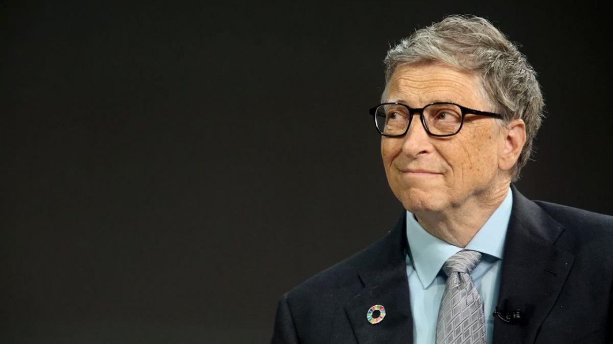

Sobre Bill Gates
William Henry Gates III, mais conhecido como Bill Gates, é um magnata, empresário, diretor executivo, investidor, filantropo e autor americano, que ficou conhecido por fundar, junto com Paul Allen a Microsoft, a maior e mais conhecida empresa de software do mundo em termos de valor de mercado.

Nascimento: 28 de outubro de 1955 (idade 66 anos), Seattle, Washington, EUA
Filhos: Phoebe Adele Gates;
Jennifer Katharine Gates;
Rory John Gates.
Patrimônio líquido: 100 bilhões USD (2022) Forbes
Formação: Harvard College (1973–1975), Escola Lakeside (1967–1973)
Altura: 1,77 m
O que Bill Gates fez de importante?
Resultado de imagem para bill gates
Bill Gates é um empresário americano mundialmente conhecido por fundar a Microsoft, a mais conhecida empresa de software do mundo. É também reconhecidamente um dos pioneiros na revolução do computador voltado para o consumidor comum.
O que Bill Gates faz hoje em dia?
Resultado de imagem para bill gates
Bill Gates canaliza US$ 20 bilhões para fundação e planeja deixar lista das pessoas mais ricas. Bill Gates está transferindo US$ 20 bilhões de sua riqueza para a doação da Fundação Bill e Melinda Gates, que está aumentando seus gastos diante de desafios globais, incluindo a pandemia e a guerra na Ucrânia
Como Bill Gates ficou bilionário?
Em 1986, ano em que a empresa passou a ser negociada no mercado de ações, o então milionário detinha 45% dos papéis da companhia, na época avaliada em US$ 315 milhões. No ano seguinte, aos 31 anos de idade, Bill Gates fez o seu primeiro bilhão e se tornou um dos homens mais ricos do mundo